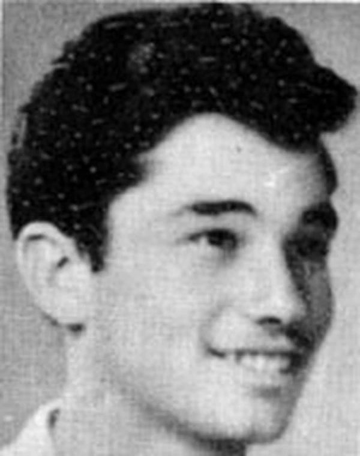

כפר עזה
דמבסקי מיכאל ז"ל
חבר קיבוץ כפר עזה
סיפור חיים
בן מקס וליזל. נולד ביום כ״ב בשבט תש״ג (28.1.1943) בעפולה. למד בבית הספר היסודי "תל-חי" אשר בנוה שאנן בחיפה ולאחר מכן למד בבית הספר התיכון החקלאי בכפר הנוער "גלים" שם. אהב ספרות ונטה לספורט.
לצה״ל גויס באוקטובר 1950 ושירת בהגנה המרחבית, בפיקוד העורף ובמסגרת נח״ל; את הכשרתו קיבל בקבוצת גניגר, השתתף בהיאחזות כורזים ולבסוף בכפר עזה, אשר בו היה לחבר הקיבוץ ועבד בחקלאות.
היה יוצא למילואים ובפרוץ מלחמת ששת הימים מילא שוב את תפקידו בנאמנות בלחמו מתוך מסירות.
נפל בעזה ביום כ״ח באייר תשכ״ז (7.6.1967), היום השלישי לקרבות, כאשר נפגע מאש צלפים של האויב. הניח אישה וילד.
הובא לקבורה בבית הקברות הצבאי לשעת חירום בבארי ולאחר זמן הועבר למנוחת עולמים בבית העלמין הצבאי בחיפה.
כמה עמודים הוקדשו לזכרו בספר "בדרכם" בהוצאת איחוד הקבוצות והקיבוצים לזכרם של חברי האיחוד שנפלו במערכה.